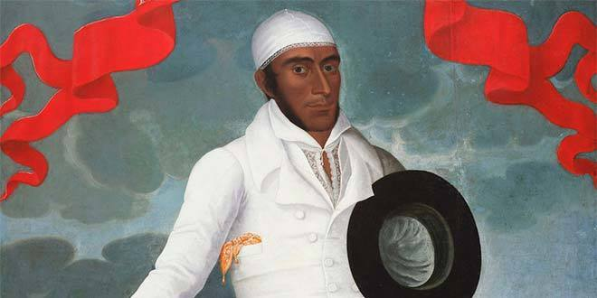

José Silverio Olaya Balandra, mártir patriota. Nació en 1782 en la villa de San Pedro de Chorrillos, una ranchería de pescadores y, simultáneamente, uno de los balnearios más famosos de la época. Hijo de José Apolinario Olaya y de Melchora Balandra. Aparentemente sirvió desde muy joven a la causa libertadora, pues se dice que ya desde 1820 portaba mensajes de enlace entre Chorrillos y las naves de la escuadra libertadora recién llegadas al litoral peruano, al mando del marino británico Thomas Cochrane. Su padre fallece en 1822 y al año siguiente conoce a Juana de Dios Manrique, quien apoyaba igualmente la causa de la emancipación y cuyo nombre serviría de cubierta a las comunicaciones secretas entre los patriotas. En junio de 1823, luego de la derrota del ejército libertador en las batallas de Torata y Moquegua, Lima fue ocupada por las tropas realistas del general José Canterac y el gobierno independiente tuvo que refugiarse en los castillos del Real Felipe, al igual que las fuerzas del ejército libertador al mando del general Antonio José de Sucre. Era de imperiosa necesidad restablecer la comunicación entre los sitiados en el Callao y los patriotas de Lima, además de conocer los movimientos del ejército enemigo de ocupación. En tal circunstancia, Andrés Riquero, antiguo contador mayor y tío de Juana de Dios Manrique, planteó a Sucre la posibilidad de utilizar para tal misión la experiencia y el probado valor de José Olaya, quien por su oficio hacía continuos viajes entre el pueblo de Chorrillos y la isla de San Lorenzo, y no despertaría sospecha alguna.
